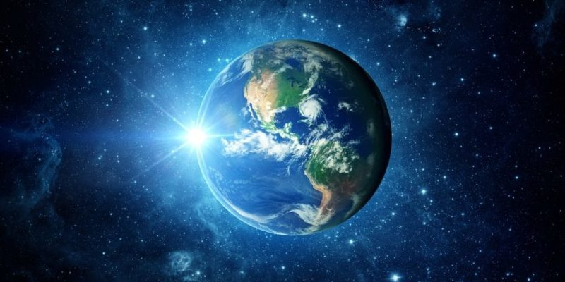
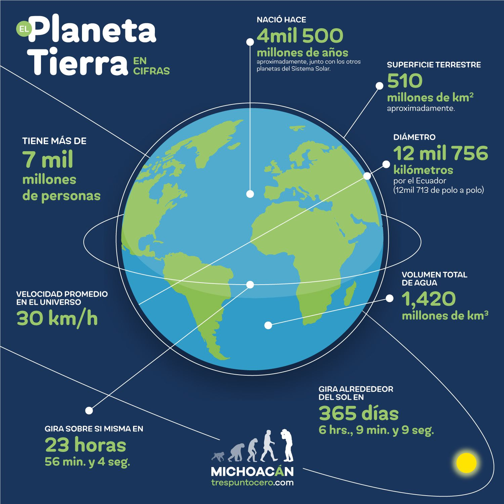
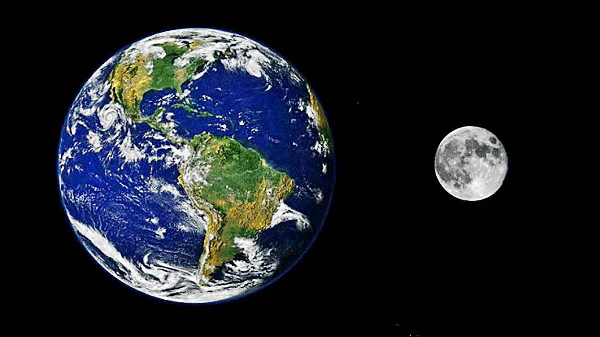

Hablar de la Tierra implica un número indefinido de palabras y una cantidad de tiempo impresionante. Se sabe mucho sobre ella, y aún así falta demasiado por aprender. Pero es posible condensar lo más importante que de ella se conoce.

La Tierra es el hogar de los seres vivos y se formó hace más de 4,500 millones de años. Es el quinto planeta más grande del Sistema Solar y el tercero más cercano al Sol; su distancia promedio a éste es de unos 149’597,890 kilómetros o prácticamente 150 millones de kilómetros. Como otros planetas, presenta una forma esférica y ligeramente achatada en los polos. Su diámetro es apenas un poco más grande que el de Venus. Es un planeta sin anillos pero con un satélite natural, la Luna.
Aunque normalmente se le representa como una esfera en posición vertical, su eje está ligeramente inclinado a unos 23.45°. La consecuencia de esta inclinación son las estaciones: primavera, verano, otoño e invierno pues durante una parte del año el hemisferio norte se inclina hacia el Sol por lo que en el norte es verano y en el sur es invierno. Durante la otra mitad del año esta situación se invierte.

La Tierra orbita alrededor del Sol, la estrella que provee el nivel de luz y calor ideales para la vida. En términos básicos, el planeta experimenta dos movimientos: rotación y traslación. El primero es efectuado alrededor del eje polar en el sentido contrario al de las manecillas del reloj, es decir, de oeste a este. El movimiento de traslación es el que realiza alrededor del Sol en una órbita casi circular.
Como ya sabes, la Tierra es el planeta en que nos encontramos. Es el mayor de los planetas rocosos del sistema solar y una de sus características, que podemos observar la mayoría de noches, es que cuenta con su propio satélite: la Luna.
